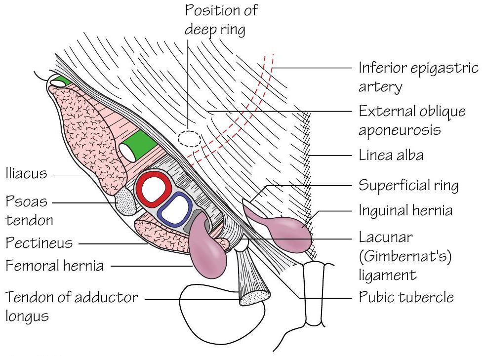

Surface landmarks around the hip and gluteal region
•The anterior superior iliac spine is a prominent landmark at the anterior end of the iliac crest.
•The greater trochanter of the femur lies approximately a handsbreadth below the iliac crest. It is made more prominent by adducting the hip.
•The ischial tuberosity is covered by gluteus maximus when the hip is extended. It can be palpated in the lower part of the buttock with the hip flexed.
•The femoral pulse (Fig. 52.1) is most easily felt halfway between the anterior superior iliac spine and the symphysis pubis (mid-inguinal point). The femoral head lies deep to the femoral artery at the mid-inguinal point. The femoral vein lies medial, and the femoral nerve lateral, to the artery at this point.
•The femoral canal (Fig. 52.1) lies medial to the femoral vein within the femoral sheath. The sac of a femoral hernia passes through the canal to expand below the deep fascia. The hernial sac always lies below and lateral to the pubic tubercle (cf. the neck of an inguinal hernia which is always situated above and medial to the tubercle). The risk of strangulation is high in femoral herniae as the femoral canal is narrow and blood flow to viscera within the hernial sac can easily be impaired.
•The great saphenous vein pierces the cribriform fascia in the saphenous opening of the deep fascia to drain into the femoral vein 4 cm below and lateral to the pubic tubercle (Fig. 43.2).
•In thin subjects the horizontal chain of superficial inguinal lymph nodes is palpable. It lies below and parallel to the inguinal ligament.
•The sciatic nerve has a curved course throughout the gluteal region. Consider two lines-one connects the posterior superior iliac spine and the ischial tuberosity and the other connects the greater trochanter and the ischial tuberosity (Fig. 52.2). The nerve descends the thigh in the midline posteriorly. The division of the sciatic nerve into tibial and common peroneal components occurs usually at a point a handsbreadth above the popliteal crease but is highly variable. Sciatic nerve damage is occasionally caused by badly placed intramuscular injections. The safest site for intramuscular injection is consequently the upper outer quadrant of the buttock.
•The common peroneal nerve winds superficially around the neck of the fibula. In thin subjects it can be palpated at this point. Footdrop can result from fibular neck fractures where damage to this nerve has occurred.
Surface landmarks around the knee
•The patella and ligamentum patellae are easily palpable with the limb extended and relaxed. The ligamentum patellae can be traced to its attachment at the tibial tuberosity.
•The adductor tubercle can be felt on the medial aspect of the femur above the medial condyle.
•The femoral and tibial condyles are prominent landmarks. With the knee in flexion the joint line, and outer edges of the menisci within, are palpable. The medial and lateral collateral ligaments are palpable on either side of the knee and can be followed to their bony attachments.
•The subcutaneous border of the tibia is palpable throughout its length.
•The fibular head is palpable laterally (Fig. 52.4). The shaft of the fibula is mostly covered but is subcutaneous for the terminal 10 cm.
•The popliteal pulse is notoriously difficult to feel as it lies deep to the tibial nerve and popliteal vein. It is best felt by palpating in the popliteal fossa with the patient prone and the knee flexed.
Surface landmarks around the ankle
•The medial and lateral malleoli are prominent at the ankle. The lateral is more elongated and descends a little further than the medial.
•When the foot is dorsiflexed the tendons of tibialis anterior, extensor hallucis longus and extensor digitorum are visible on the anterior aspect of the ankle and the dorsum of the foot.
•The tendons of peroneus longus and brevis pass behind the lateral malleolus.
•Passing behind the medial malleolus lie: the tendons of tibialis posterior and flexor digitorum longus, the posterior tibial artery and its venae comitantes, the tibial nerve and flexor hallucis longus (Fig. 52.3).
Surface landmarks around the foot (Fig. 52.5)
•The head of the talus is palpable immediately anterior to the distal tibia.
•The base of the 5th metatarsal is palpable on the lateral border of the foot. The tendon of peroneus brevis inserts onto the tuberosity on the base.
•The heel is formed by the calcaneus. The tendocalcaneus (Achilles) is palpable above the heel. Sudden stretch of this can lead to rupture. When this occurs a gap in the tendon is often palpable.
•The tuberosity of the navicular can be palpated 2.5 cm anterior to the medial malleolus. It receives most of the tendon of tibialis posterior.
•The peroneal tubercle of the calcaneum can be felt 2.5 cm below the tip of the lateral malleolus.
•The sustentaculum tali can be felt 2.5 cm below the medial malleolus. The tendon of tibialis posterior lies above the sustentaculum tali and the tendon of flexor hallucis longus winds beneath it.
•The dorsalis pedis pulse is located on the dorsum of the foot between the tendons of extensor hallucis longus and extensor digitorum.
•The posterior tibial pulse is best felt halfway between the medial malleolus and the heel.
•The dorsal venous arch is visible on the dorsum of the foot. The small saphenous vein drains the lateral end of the arch and passes posterior to the lateral malleolus to ascend the calf and drain into the popliteal vein. The great saphenous vein passes anterior to the medial malleolus to ascend the length of the lower limb and drain into the femoral vein. This vein can be accessed consistently by 'cutting down' anterior to, and above, the medial malleolus following local anaesthesia. This is used in emergency situations when intravenous access is difficult but required urgently.

[Fig.52.1 The anatomy of femoral and inguinal herniae. Note the relation of the deep inguinal ring to the inferior epigastric artery and the relation of the two types of hernia to the pubic tubercle][Fig.52.2 The surface markings of the sciatic nerve][Fig.52.4 Visible structures on the medial side of the lower limb][Fig.52.3 The structures on the medial side of the ankle][Fig.52.5 The lateral aspect of the foot to show the tendons that can be recognised]